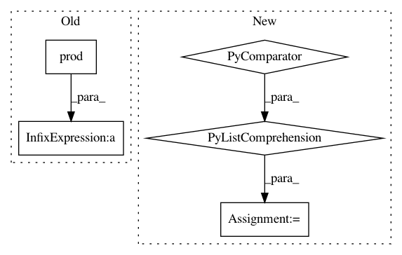

22fb2fe9ea4ad5ef536709aa07838d3d6c7357ee,nn_dataflow/LoopBlockingScheme.py,LoopBlockingScheme,_set_unit_cnt,#LoopBlockingScheme#,336
Before Change
blp1 = bl + 1
pblti = Util.prod(self.ti[blp1:])
pblto = Util.prod(self.to[blp1:])
pbltb = Util.prod(self.tb[blp1:])
uc = [1] * de.NUM
uc[de.FIL] = pblti * pblto
uc[de.IFM] = pblti * pbltb
uc[de.OFM] = pblto * pbltb
self.unit_cnt.append(uc)
def _set_fetch(self):
After Change
for bl in range(self.BL.NUM):
// BL corresponds to the BL + 1 element in ti/to/tb.
blp1 = bl + 1
bl_tps = [Util.prod(ts) for ts in self._bl_t(slice(blp1, None))]
uc = self._t_data_cnt(bl_tps)
self.unit_cnt.append(uc)
def _set_fetch(self):
"""
In pattern: SUPERPATTERN
Frequency: 3
Non-data size: 5
Instances
Project Name: stanford-mast/nn_dataflow
Commit Name: 22fb2fe9ea4ad5ef536709aa07838d3d6c7357ee
Time: 2017-05-26
Author: mgao12@stanford.edu
File Name: nn_dataflow/LoopBlockingScheme.py
Class Name: LoopBlockingScheme
Method Name: _set_unit_cnt
Project Name: pymc-devs/pymc3
Commit Name: a8cb5fdf89cb36b1ede31ed310ee795c49cfac25
Time: 2017-01-09
Author: taku.yoshioka.4096@gmail.com
File Name: pymc3/variational/advi_minibatch.py
Class Name:
Method Name: _join_local_RVs
Project Name: pymc-devs/pymc3
Commit Name: a8cb5fdf89cb36b1ede31ed310ee795c49cfac25
Time: 2017-01-09
Author: taku.yoshioka.4096@gmail.com
File Name: pymc3/variational/advi_minibatch.py
Class Name:
Method Name: _join_global_RVs